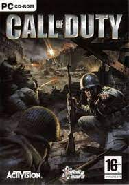

Merhaba,Ben Ömer Faruk ÇAVDAR.Bursa'da yaşıyorum.27 yaşındayım.Anadolu
Üniversitesi İktisat Fakültesi Uluslararası İlişkiler Bölümü mezunuyum.
Yazılım öğrenmeye arkadaşımın tavsiyesi üzerine başladım ve yolum patika
kodluyoruz eğitimi ile kesişti. Hedefim bir gün iyi bir yazılımcı olarak
dünya çapında bilinen bir şirkette web tasarımcısı,gelişimcisi olmak.
Eğitimlerden kalan boş vakitlerimde genelde
İnstagram ve
Twitter da vakit geçiriyorum. Bilgisayar
oyunları oynamayı ve
Netflix'ten dizi izlemeyi
seviyorum.
Sevdiğim PC Oyunları
Her gün dünyanın dört bir yanından milyonlarca oyuncu, takımlı 5v5
maçlarına katılarak yüzlerce Dota kahramanı arasından birini seçiyor.
Dota, bugüne kadar geliştirilmiş en detaylı çok oyunculu GZS oyunudur.
Bu oyunda her an yeni bir strateji veya taktik keşfedebilirsiniz. Dota
oynaması ücretsiz bir oyundur ve öyle olmaya da devam edecek.
Call of Duty (Türkçe: Görev Çağrısı, İngilizce telaffuz: [koɫ of dʉti]),
birinci şahıs nişancı türü aksiyon oyunları serisidir

FIFA 23, Electronic Arts tarafından yayınlanan futbol simülasyonu video
oyunudur. FIFA serisinin 30. oyunudur. PC, Nintendo Switch, PlayStation
4, PlayStation 5, Xbox One, Xbox Series X/S ve Google Stadia için dünya
çapında 26 Eylül 2022 tarihinde piyasaya sürüldü.
Sevdiğim Netflix Dizileri
The Walking Dead
The Walking Dead, Frank Darabont tarafından geliştirilen bir Amerikan
televizyon dizisidir. Hikâyesi, Robert Kirkman, Tony Moore ve Charlie
Adlard 'ın aynı adlı çizgi romanına dayanmaktadır.
Black Mirror
Black Mirror, drama, macera, hiciv ve bilimkurgu tarzında 4 Aralık 2011
tarihinde yayınlanmaya başlayan İngiliz televizyon dizisi.
Peaky Blinders
Peaky Blinders, Birinci Dünya Savaşı sonrasında Birmingham, İngiltere'de
faaliyet gösteren "Peaky Blinders" adlı çeteyi anlatan suç-drama konulu
televizyon dizisidir.